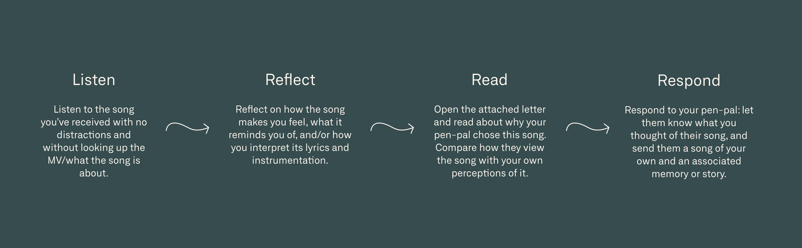
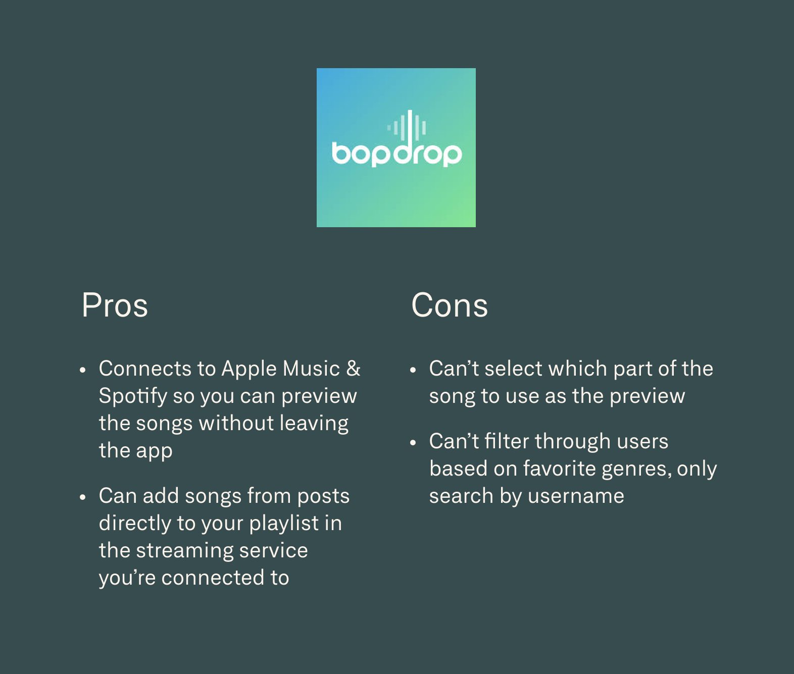
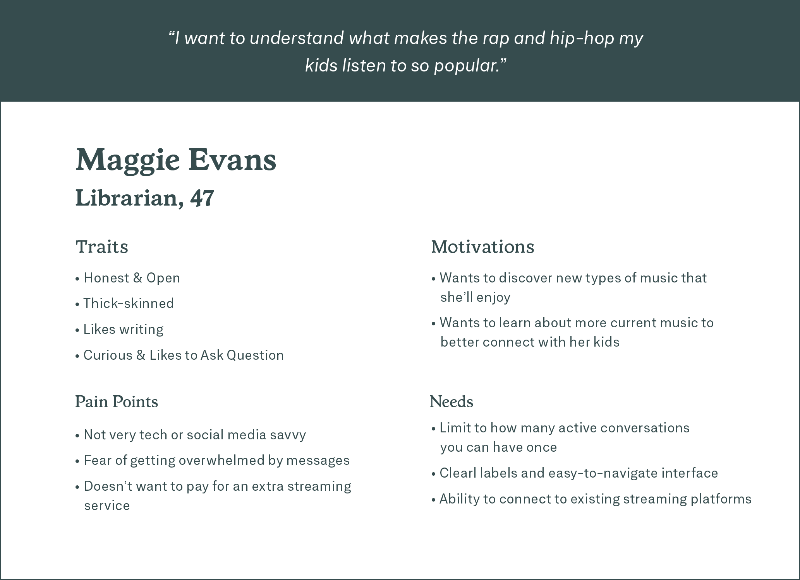
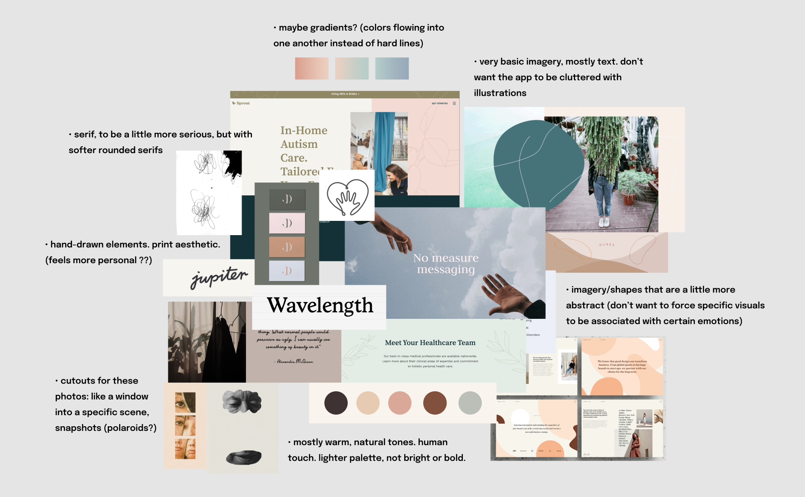
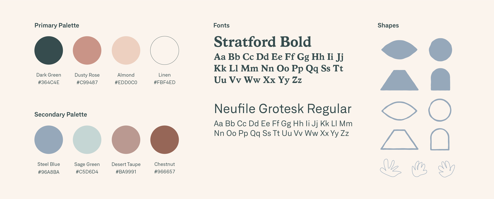

Wavelength
Timeline
Jan-Apr '21 (12 weeks)
Tools
Figma, Adobe Illustrator
How Might Music-Sharing Act as a Tool to Encourage the Practice of Empathy?
For my undergraduate capstone project, I started out researching the topic of music and emotion. Throughout my research, I’ve found that there are a number of different factors that influence how individuals might perceive emotions while listening to music as well as the emotions they are experiencing themselves. These factors can originate from the music piece itself, such as tempo and chord progressions. They can also stem from the listener; such factors include the listener’s personal memories linked and specific personality traits.
As I delved into studies on perceived and induced emotions in music, I was drawn to the idea of an individual’s music-listening preferences being shaped by their experiences. One of the hypotheses that stood out to me posited that sad music evoked positive emotions in high empathizers more often than in low empathizers because the former enjoyed the process of imagining themselves in the place of the singer. This made me wonder about how music might be used as a tool to practice empathizing with others. Listeners may be aware that music can be interpreted differently by others, but they may not know to what extent or what those other interpretations are. Through this research project, I aimed to explore how sharing music could facilitate the process of identifying with another person’s emotions and experiences.
Solution
Wavelength is a mobile pen-palling app that focuses on connecting people through music. The app allows users to send each other songs that are accompanied by a letter that details how the song is perceived and why it is significant to the writer.
How It Works
Pen-pals may choose to use one of the writing prompts to help them select a song to share. By connecting to their preferred music streaming service, users can search for a song to embed in their letter. Once their letter is written and sent, the recipient can listen, reflect and respond with their own song and story. Writers can easily point out specific parts of a song they want to refer to in their letter using timestamps.
 Take Time to Reflect
The letters are only readable once the recipient has listened to the attached song at least once. This way, they have a chance to reflect and form their own opinion on it before reading about why their pen-pal chose this song.
Make Meaningful Connections
Users can search for a pen pal based on their favourite music genres and how often they would like to correspond. They may correspond with up to 3 pen-pals at once, so they can focus on quality conversations, not quantity.
Learn From Stories
In addition to their private correspondence with their pen-pals, users can read anonymous stories from others or submit their own based on weekly prompts. This opens up users to learn from even more diverse perspectives.

Discover New Music
Whenever they receive a new song, users can add it to a premade playlist in the streaming platform they’re connected to. They can also view a list of all the songs they’ve previously received and who sent it to them.

Highlight Song Clips
Writers can easily point out specific parts of a song they want to refer to in their letter using timestamps. When readers click on the highlighted sections of a letter, they’ll hear the chosen clip of the song play automatically.
Take Time to Reflect
The letters are only readable once the recipient has listened to the attached song at least once. This way, they have a chance to reflect and form their own opinion on it before reading about why their pen-pal chose this song.
Make Meaningful Connections
Users can search for a pen pal based on their favourite music genres and how often they would like to correspond. They may correspond with up to 3 pen-pals at once, so they can focus on quality conversations, not quantity.
Learn From Stories
In addition to their private correspondence with their pen-pals, users can read anonymous stories from others or submit their own based on weekly prompts. This opens up users to learn from even more diverse perspectives.
Discover New Music
Whenever they receive a new song, users can add it to a premade playlist in the streaming platform they’re connected to. They can also view a list of all the songs they’ve previously received and who sent it to them.
Highlight Song Clips
Writers can easily point out specific parts of a song they want to refer to in their letter using timestamps. When readers click on the highlighted sections of a letter, they’ll hear the chosen clip of the song play automatically.
Process
PACT Analysis
I started out my research by conducting a PACT (People, Activities, Contexts, Technologies) Analysis.
Competitive Analysis
As no pen-palling apps focused on music currently exist, I took a look at general pen-palling apps and music-sharing apps. Two main competitors I found were SLOWLY, a pen-pal app focused on slowing down communication and Bopdrop, a social media app that lets users share one song a day:
User Personas
With this initial research done, my next step was to create personas that would represent the users I was targeting. These guided me in identifying the core needs for my design solution. They also helped me to select pen-pals for my correspondence phase who would match my target audience.
Correspondence
Based on my initial research, I developed a skeleton for the correspondence experience, which I then user tested: I released a call for pen-pals form to the public via social media and selected six separate pen-pals to engage in a 3-week e-mail correspondence with. I also wrote out instructions for them to follow and prompts to help them select a song to share if they got stuck. I would send a Spotify link to listen to a song with a letter attached in the e-mail. The recipient would first listen to the song without distractions or watching the music video and reflect on how it makes them feel. Then, they would read the letter to compare our perspectives and respond with their own letter and song. Throughout this process, I took note of my own observations and reflections on the experience and after the correspondence, I collected feedback from my pen-pals on how it went. These were a few key things I drew from it:
MoSCoW Chart
Following the correspondence phase, I gathered comments and suggestions that helped develop a MosCoW chart of all the features I wanted to include in the app.
System Map
Once I defined my core features, I created a system map of the structure and hierarchy of the app’s different sections and how users would navigate them.
Wireframes
With my system map done and my user scenarios generally mapped out, I brought my sketches into Figma and created wireframes of some of my main user flows (writing a letter and annotating a song, reading a story submission, and adding a pen pal).
Moodboarding
[REPLACE TEXT]
Visual System
I chose Stratford because as a serif font, it evokes a sense of maturity and recalls tradi tional print materials and typewritten letters. However, its rounded edges grant the typeface a more friendly feel. Stratford Bold is used for main headings. Neufile Grotesk is a highly legible sans-serif that was chosen for its structural similari ties to Stratford as well as its large number of weights and styles. Neufile Grotesk Regular is used for body text. Wavelength’s color palette is made up primarily of shades of green and brown. Warm, natural tones were selected to give the brand a more human feel.
Mockups
I went through a number of revisions as I was designing at high-fidelity. For example, the song annotations originally acted similarly to comments in SoundCloud do. However, I realized it made more sense to attach the song clip to the sentence that refers to it instead of the other way around. Below are just a few more examples of how the design of my app changed with each new iteration.
Final Outcome & Takeaways
Throughout this process, I’ve learned how important it is to keep in mind the user personas when designing in order to make
target-centric decisions. The research that I did before my ideation phase was really key to figuring out which features were
most important and how they should be implemented. For example, I made sure to include the option to switch between
lessons from different cultures since a lot of the people in my target audience came from mixed backgrounds.
Something that I‘d like to develop further is the events page: how
RSVPing works, viewing the numbers of attendees at events, as well as how bonus recipes are redeemed after events/how to
verify that someone has attended an event. I would also like to work more on the idea of a journal/photo album where users can
store photos of the recipes they have attempted, and possibly share them and view others’ attempts.
The Figma prototype can be viewed here.